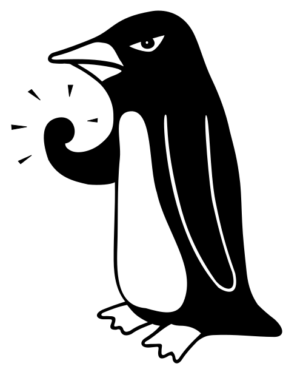

Chris Brady
The founding member, Chris is a Plasma Physicist and High-Performance specialist with tons of experience in programming of all sorts. He loves Fortran and hates writing "About Me" sections.
We are the Research Software Engineering team embedded in the Scientific Computing RTP.

“The Angry Penguin”, used under Creative Commons licence
from Swantje Hess and Jannis Pohlmann.
Put simply, creation, maintenance and support of Software dedicated to research - software without which the research could not be carried out. This could be anything from large scale simulation software through to data analysis scripts, and even data presentation.
Warwick RSE work on a range of projects, mostly within the Scientific Computing domain, but we'll turn our hand to anything if we have the time and skills.
This is our general github.io page, which we use to host temporary project documentation, examples and information we want to make publically accessible.
Our official webpages are available on Warwick's website
Find out more about the sorts of projects we've taken on via our searchable directory or our detailled case studies . Neither is exhaustive, and we really are happy to take on (almost) anything we can tackle for Warwick researchers - or point you to somebody who can.
The founding member, Chris is a Plasma Physicist and High-Performance specialist with tons of experience in programming of all sorts. He loves Fortran and hates writing "About Me" sections.
A computational chemist in a previous life, Svenja works primarily for the Heterogenous Systems CDT but is also one of the core RSE team. She's done plenty of Fortran, Python and a little Julia, and has recently been getting Rusty - sorry, learning some Rust - to round it out.
Another (possibly ex) Plasma Physicist, Heather has done "a little bit of everything", from numerical methods and parallel programming to GUI development and database design. She's stopped trying to list her programming languages, but still dislikes white-space-as-syntax - that means you Python!
With a background in fluid dynamics, Sarah is the newest member of the SC team. She spent some time as an RSE working in Arts and Humanities, so has plenty of data presentation skills to draw on, as well as her algorithms experience. We also put her on a Fortran project, because all proper programmers should know Fortran!
Researchers at Warwick can contact us via our forms or the SCRTP Slack channel. But if you want to email, you can get the entire team via our shared email account
resource.rse@warwick.ac.uk